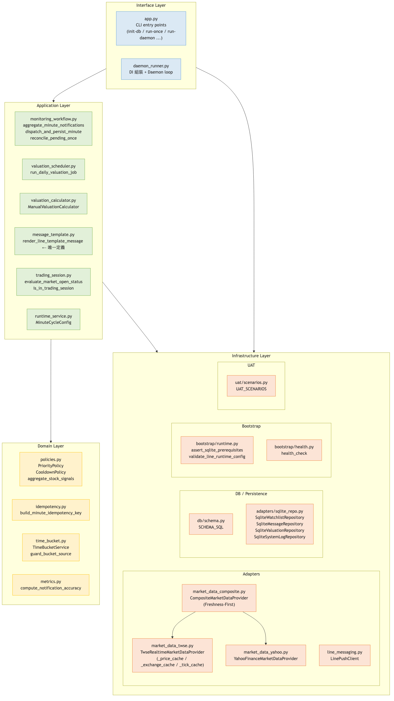
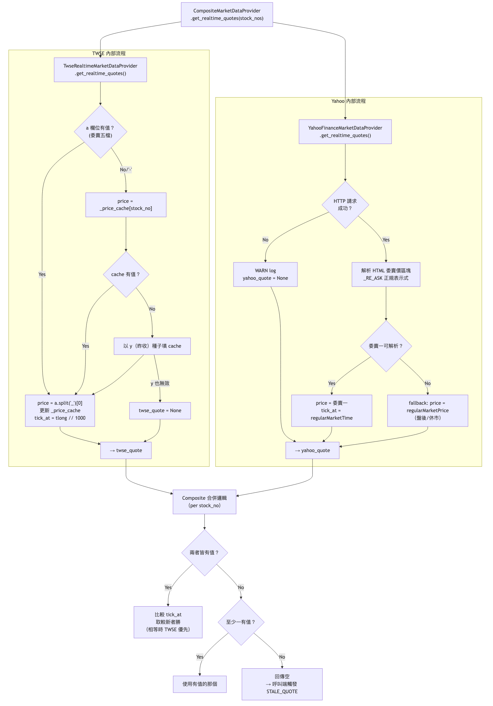
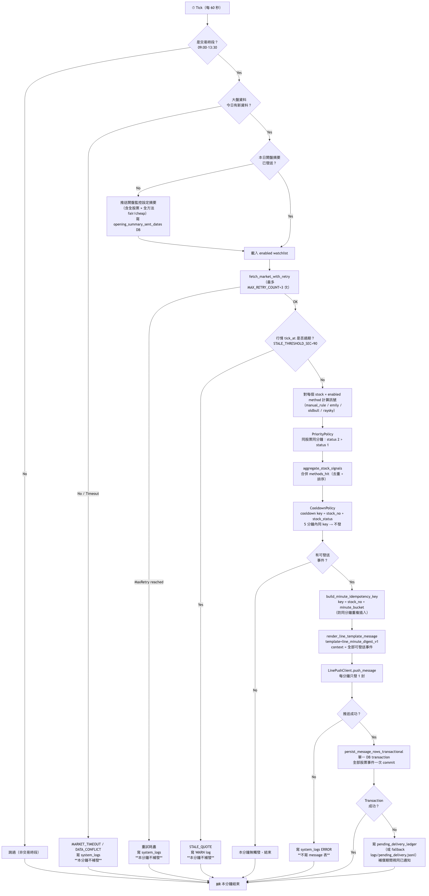
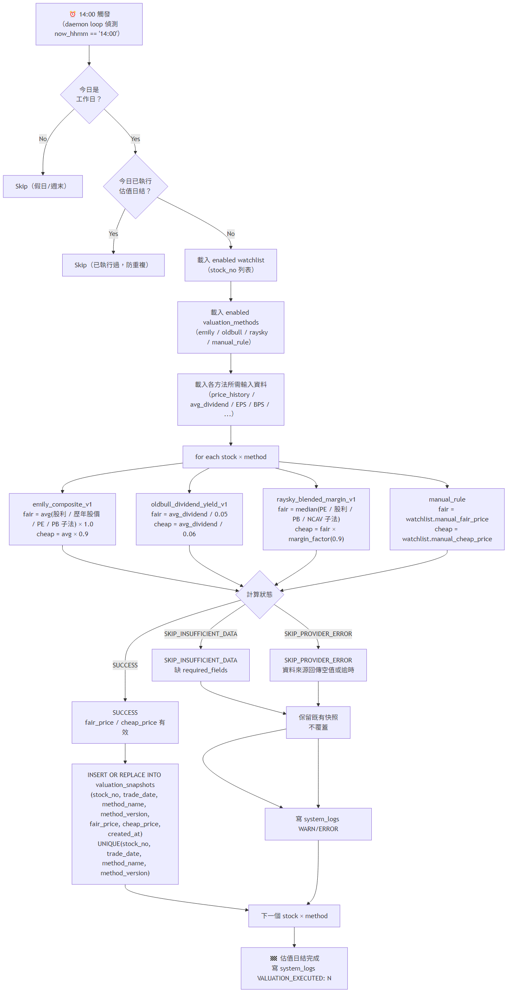
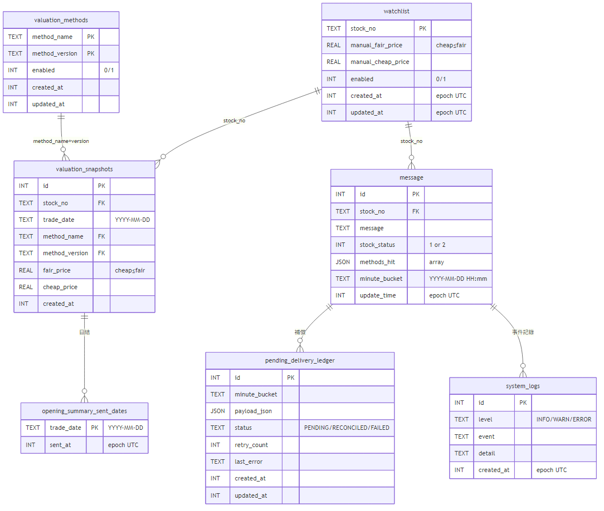
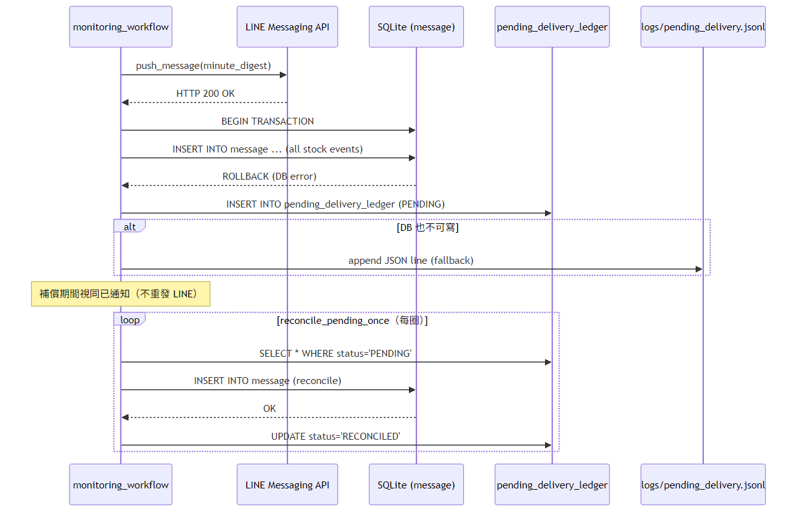
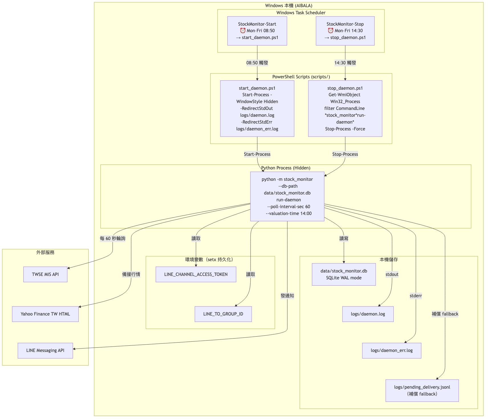
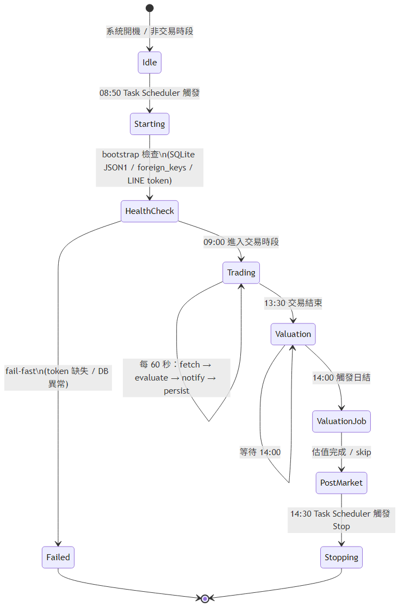
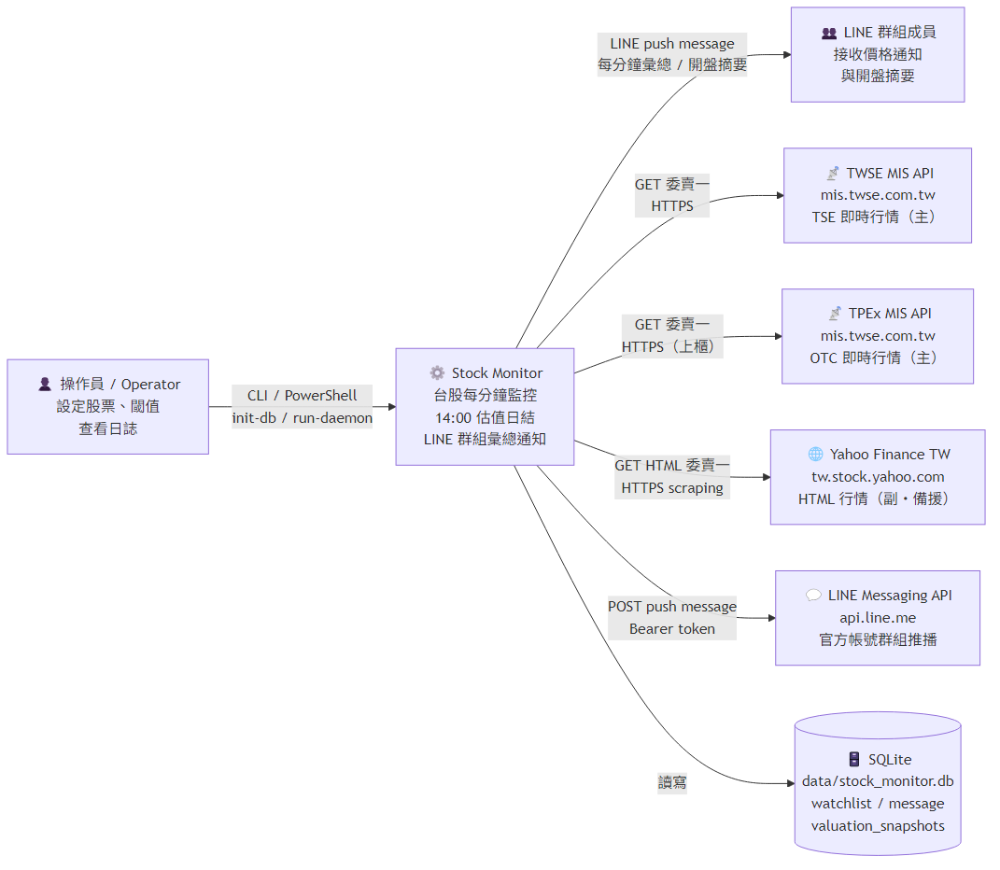

工程設計文件（EDD）
版本 v0.9 · 2026-04-14 · 對齊 PDD v1.0
定義工程實作細節：架構分層、Adapter 規格、資料模型、流程設計與 Phase 規劃。
§2 關鍵業務規則（定版）
訊號狀態定義
| status | 語意 | 觸發條件 |
|---|---|---|
| 1 | 低於合理價（below fair） | market_price ≤ fair_price |
| 2 | 低於便宜價（below cheap） | market_price ≤ cheap_price |
多方法命中規則（§2.3）
- 同分鐘同股票，多方法都符合 status=1 → 只產生一個股票層級訊號（status=1），訊息附命中方法清單。
- 同分鐘同股票，有方法命中 status=1 且另有方法命中 status=2 → 統一產生 status=2，附完整命中方法清單。
不可變常數
| 項目 | 值 |
|---|---|
| 時區 | Asia/Taipei（不接受 fallback UTC） |
| 輪詢間隔 | 60 秒 |
| 冷卻秒數 | 300 秒（stock_no + stock_status） |
| 交易時段 | 09:00–13:30（含） |
| 開盤檢查起始 | 08:45 |
| 報價新鮮度門檻 | STALE_THRESHOLD_SEC=90 |
| 行情重試上限 | MAX_RETRY_COUNT=3 |
| 每分鐘 LINE 訊息數 | 最多 1 封（彙總） |
| 日結估值時間 | 14:00 |
| 冪等鍵組成 | stock_no + minute_bucket（不含 stock_status） |
§3 架構總覽（Clean Architecture）

圖 2 — Clean Architecture：Domain / Application / Adapters / Interface 四層分離
+-------------------- Interface Layer --------------------+
| Scheduler(1m/14:00) | CLI | Config | Logger |
+--------------------------+------------------------------+
v
+-------------------- Application Layer ------------------+
| CheckIntradayPriceUseCase |
| RunDailyValuationUseCase |
| ComposeMinuteDigestUseCase |
| RenderLineMessageUseCase |
+--------------------------+------------------------------+
v (Ports / Interfaces)
+---------------------- Domain Layer ---------------------+
| Entities: Stock, SignalEvent, ValuationSnapshot |
| Policies: SignalPolicy, CooldownPolicy, PriorityPolicy |
+--------------------------+------------------------------+
v
+------------------ Infrastructure Layer -----------------+
| TwseRealtimeMarketDataProvider (主行情 + _price_cache) |
| YahooFinanceMarketDataProvider (副行情 HTML scraping) |
| CompositeMarketDataProvider (Freshness-First 聚合) |
| LineMessagingApiAdapter |
| LineTemplateRenderer / TemplateRepository |
| SQLite: watchlist / valuation / message / system_logs |
+---------------------------------------------------------+§3.3 雙行情來源 Adapter 規格

圖 5 — Freshness-First 取捨流程：TWSE cache vs. Yahoo tick_at 比較
TwseRealtimeMarketDataProvider
| 欄位 | 說明 |
|---|---|
| 端點 | https://mis.twse.com.tw/stock/api/getStockInfo.jsp |
a 欄 | 委賣五檔（_ 分隔）；a.split('_')[0] = 委賣一 = 系統 price |
tlong | 毫秒時間戳 → tick_at = tlong // 1000 |
_price_cache | a 有值時更新；a 為空或 - 時讀取 cache |
| 冷啟動 seed | cache 空且 a 無效時，以 y（昨收）種子填充 |
_exchange_cache | 由 ex 欄更新（tse 或 otc） |
YahooFinanceMarketDataProvider
| 欄位 | 說明 |
|---|---|
| 端點 | https://tw.stock.yahoo.com/quote/{stock_no} |
| price | HTML 委賣價區塊委賣一（去逗號）；盤後 fallback regularMarketPrice |
| tick_at | "regularMarketTime":XXXX（unix seconds） |
| HTTP 失敗 | WARN log，回傳空 dict，不中斷主流程（CR-ADP-01） |
| exchange_map | 接受但不做 URL 建構用途（介面相容性） |
CompositeMarketDataProvider（Freshness-First）
- Rule 1twse && yahoo 均有值 →
tick_at較新者勝；相等時以 twse 為準。 - Rule 2僅 twse 有值 → 使用 twse。
- Rule 3僅 yahoo 有值（twse cache 空，冷啟動）→ 使用 yahoo。
- Rule 4兩者皆無 → 不加入結果（觸發 STALE_QUOTE）。
§4.1 盤中每分鐘流程

圖 3 — 盤中流程全圖：交易判斷 → 行情抓取 → 訊號評估 → 冷卻過濾 → 彙總發送 → 落盤
流程步驟
- Tick every 60s → 判斷是否交易時段
- 當日開盤摘要是否已發送 → 否則先發一封開盤摘要
- 載入啟用的 watchlist → 抓取所有股票委賣一報價
- 對每股票逐方法評估訊號（status=1 / status=2）
- 套用優先序（2 > 1）和冷卻過濾（
stock_no + stock_status） - 若無可發事件 → 結束；否則建立 render context
- 呼叫
render_line_template_message(template_key, context) - 發送 LINE（每分鐘最多 1 封彙總）
- 發送成功 → DB transaction 一次提交所有 message rows
- 發送失敗 → 只寫 system_logs；DB 失敗 → 寫 pending_delivery_ledger
§4.2 日結估值流程

圖 4 — 每日 14:00 估值：逐股逐方法計算，SUCCESS 寫入快照，SKIP_* 保留舊值並記日誌
估值方法執行狀態
| 狀態 | 說明 | 動作 |
|---|---|---|
| SUCCESS | 資料完整，計算成功 | Upsert valuation_snapshots |
| SKIP_INSUFFICIENT_DATA | 資料不足（缺 EPS / 股利等） | 不覆蓋舊快照，寫 WARN log |
| SKIP_PROVIDER_ERROR | 來源 API 失敗 | 不覆蓋舊快照，寫 ERROR log |
§5 交易日與開盤判斷
| 規則 | 說明 |
|---|---|
| 時區 | Asia/Taipei（全系統統一） |
| 週六/週日 | 非交易日，不進入輪詢 |
| 台灣假日 | 參考政府行事曆；09:00 後大盤無當日新資料視為不開市 |
| 08:45 | 開始檢查大盤資料來源是否有當日新資料 |
| 資料源故障 | 非休市情況需寫 system_logs，避免靜默誤判 |
§6 資料模型（SQLite）

圖 6a — 資料模型：watchlist / valuation_methods / valuation_snapshots / message / pending_delivery_ledger

圖 6b — 補償機制：LINE 成功 + DB 失敗時寫入 pending_delivery_ledger，補償完成前視同已通知
watchlist
CREATE TABLE IF NOT EXISTS watchlist (
stock_no TEXT PRIMARY KEY, -- ex: '2330'
manual_fair_price NUMERIC NOT NULL CHECK (manual_fair_price > 0),
manual_cheap_price NUMERIC NOT NULL CHECK (manual_cheap_price > 0),
enabled INTEGER NOT NULL DEFAULT 1 CHECK (enabled IN (0,1)),
created_at INTEGER NOT NULL,
updated_at INTEGER NOT NULL,
CHECK (manual_cheap_price <= manual_fair_price) -- 業務約束
);valuation_methods
CREATE TABLE IF NOT EXISTS valuation_methods (
method_name TEXT NOT NULL,
method_version TEXT NOT NULL,
enabled INTEGER NOT NULL DEFAULT 1 CHECK (enabled IN (0,1)),
created_at INTEGER NOT NULL,
updated_at INTEGER NOT NULL,
PRIMARY KEY (method_name, method_version)
);
-- 同名稱同時僅一個 enabled=1
CREATE UNIQUE INDEX IF NOT EXISTS ux_method_single_enabled
ON valuation_methods(method_name) WHERE enabled = 1;valuation_snapshots
CREATE TABLE IF NOT EXISTS valuation_snapshots (
id INTEGER PRIMARY KEY AUTOINCREMENT,
stock_no, trade_date, method_name, method_version,
fair_price NUMERIC NOT NULL CHECK (fair_price > 0),
cheap_price NUMERIC NOT NULL CHECK (cheap_price > 0),
created_at INTEGER NOT NULL,
CHECK (cheap_price <= fair_price),
UNIQUE(stock_no, trade_date, method_name, method_version)
);message
CREATE TABLE IF NOT EXISTS message (
id INTEGER PRIMARY KEY AUTOINCREMENT,
stock_no TEXT NOT NULL,
message TEXT NOT NULL,
stock_status INTEGER NOT NULL CHECK (stock_status IN (1,2)),
methods_hit TEXT NOT NULL -- JSON array, ex: ["emily_composite_v1"]
CHECK (json_valid(methods_hit) AND json_type(methods_hit) = 'array'),
minute_bucket TEXT NOT NULL -- YYYY-MM-DD HH:mm (Asia/Taipei)
CHECK (length(minute_bucket) = 16 AND ...),
update_time INTEGER NOT NULL,
UNIQUE(stock_no, minute_bucket) -- 同分鐘冪等鍵
);
CREATE INDEX IF NOT EXISTS idx_message_cooldown
ON message(stock_no, stock_status, update_time DESC);pending_delivery_ledger
CREATE TABLE IF NOT EXISTS pending_delivery_ledger (
id INTEGER PRIMARY KEY AUTOINCREMENT,
minute_bucket TEXT NOT NULL,
payload_json TEXT NOT NULL CHECK (json_valid(payload_json)),
status TEXT NOT NULL CHECK (status IN ('PENDING','RECONCILED','FAILED')),
retry_count INTEGER NOT NULL DEFAULT 0 CHECK (retry_count >= 0),
last_error TEXT,
created_at INTEGER NOT NULL,
updated_at INTEGER NOT NULL
);§ 部署架構

圖 7a — Windows 部署拓撲：Task Scheduler + Python Daemon + SQLite + LINE API

圖 7b — Daemon 狀態機：Init → Running → 各中斷態 → Stopped
| 工作名稱 | 觸發時間 | 執行日 | 動作 |
|---|---|---|---|
StockMonitor-Start | 08:50 | 週一至週五 | 啟動 daemon（背景執行） |
StockMonitor-Stop | 14:30 | 週一至週五 | 停止 daemon 程序 |
# 一次性註冊 Windows Task Scheduler
powershell -ExecutionPolicy Bypass -File scripts/register_scheduled_tasks.ps1§8 LINE 設定與安全規範
| 環境變數 | 說明 | Alias（向後相容） |
|---|---|---|
LINE_CHANNEL_ACCESS_TOKEN | Canonical 名稱 | CHANNEL_ACCESS_TOKEN |
LINE_TO_GROUP_ID | Canonical 名稱 | TARGET_GROUP_ID |
- 缺任何必要值 → fail-fast，輸出可操作錯誤訊息
- token / group id 格式明顯錯誤 → fail-fast
- 若 canonical 與 alias 同時存在，優先使用 canonical
§9 Phase 規劃
| Phase | 交付內容 | 里程碑 |
|---|---|---|
| Phase 1 (V0) | 手動 fair/cheap 監控 + LINE 通知 + cooldown + SQLite + fail-fast | M1（2–3 天） |
| Phase 2 (V1) | 三方法估值快照 + 多方法訊號 + 開盤摘要 + 模板化 LINE + 雙行情來源 | M2（2–4 天） |
| Phase 3 | 補償佇列完整實作 + 監控報表 + 操作文件 | M3（1–2 天） |
§13 Code Review 禁止清單（v1.0 定版）
-
CR-SEC-01
LinePushClient持有物件不得透過repr()或 log 輸出 token 明文；需用field(repr=False)保護。 -
CR-SEC-02
scenario_case分支禁止存在於任何生產估值計算路徑。 -
CR-SEC-03
_resolve_timezone對無效時區名稱禁止靜默 fallback UTC。 -
CR-ARCH-01
app.py（CLI Interface Layer）內禁止定義估值計算邏輯。 -
CR-ARCH-02
禁止在估值計算路徑中存在
scenario_case分支（重申 CR-SEC-02）。 -
CR-ARCH-03
render_line_template_message只允許在message_template.py中定義，禁止在其他模組重複定義。 -
CR-CODE-05
TimeBucketService對無效時區名稱禁止靜默設self._tz = None。 -
CR-ADP-01
YahooFinanceMarketDataProvider在 HTTP 失敗時禁止 raise exception 向上傳播。 -
CR-ADP-02
CompositeMarketDataProvider禁止直接回傳任一來源字典而不做 Freshness-First 比較。
Python Symbol Contract
| 模組 | Symbol |
|---|---|
stock_monitor.db.schema | SCHEMA_SQL |
stock_monitor.domain.policies | PriorityPolicy, CooldownPolicy, aggregate_stock_signals |
stock_monitor.domain.idempotency | build_minute_idempotency_key |
stock_monitor.domain.time_bucket | TimeBucketService, guard_bucket_source |
stock_monitor.application.message_template | render_line_template_message（唯一定義來源，CR-ARCH-03） |
stock_monitor.application.monitoring_workflow | aggregate_minute_notifications, merge_minute_message, dispatch_and_persist_minute |
stock_monitor.adapters.market_data_twse | TwseRealtimeMarketDataProvider（含 _price_cache、_exchange_cache、_tick_cache） |
stock_monitor.adapters.market_data_yahoo | YahooFinanceMarketDataProvider |
stock_monitor.adapters.market_data_composite | CompositeMarketDataProvider |
系統脈絡圖

圖 1 — 系統脈絡：監控 Daemon、TWSE MIS、Yahoo Finance、LINE Messaging API、SQLite